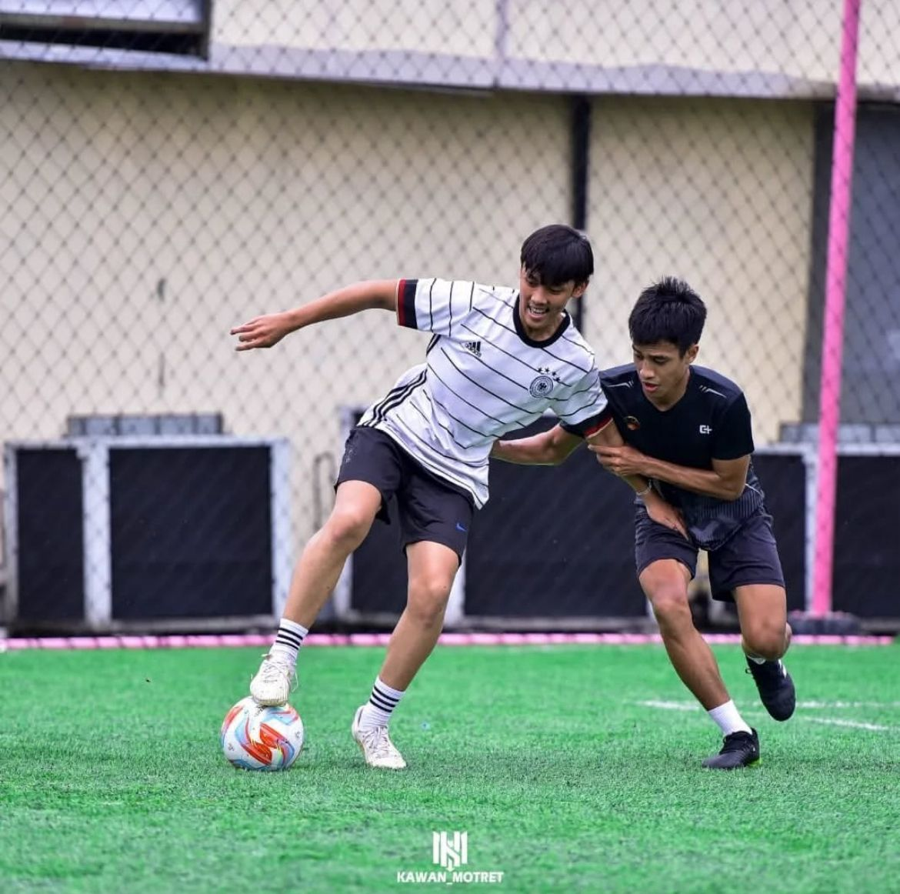
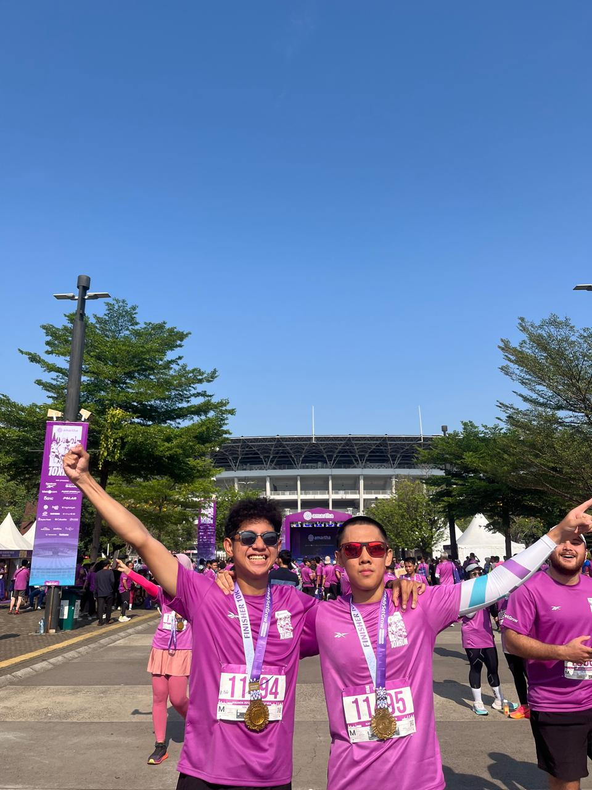

Gallery of My Hobbies


Aku adalah seseorang yang sangat antusias terhadap berbagai macam hobi dan kegiatan, terutama yang berkaitan dengan dunia olahraga. Kegemaranku begitu beragam, mulai dari olahraga tim hingga aktivitas fisik yang lebih individual. Salah satu passion terbesarku adalah bermain sepak bola dan futsal, di mana aku bisa merasakan kebersamaan tim sekaligus mengasah keterampilan teknis dan strategi.
Selain itu, aku juga sangat menikmati latihan di gym untuk membangun kekuatan dan kebugaran tubuh. Tidak hanya itu, aku tertarik dengan olahraga bela diri seperti kick boxing, yang tidak hanya melatih fisik tetapi juga ketahanan mental dan disiplin. Untuk menjaga stamina dan daya tahan kardiovaskular, aku sering melakukan lari (running) baik di trek maupun di alam terbuka.
Di sisi lain, aku juga menyukai olahraga yang membutuhkan ketepatan dan konsentrasi tinggi, seperti biliar, di mana strategi dan kontrol emosi memegang peranan penting. Aku pun sangat menikmati renang sebagai olahraga low-impact yang melatih seluruh otot tubuh, serta voli yang mengandalkan kerja sama tim dan kecepatan reaksi.
Masih banyak lagi kegiatan olahraga lain yang sering aku eksplorasi, terlalu banyak untuk disebutkan satu per satu. Intinya, aku sangat mencintai aktivitas fisik dan selalu bersemangat mencoba hal-hal baru yang menantang, baik secara fisik maupun mental.